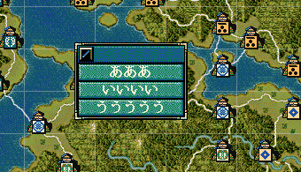

ダイアログ - 選択メニューダイアログ
複数のメニューから選択するタイプのダイアログを表示するAPIです。
大小関わらず、自作の独自イベントなどで利用することになるでしょう。

int 選択メニューダイアログ表示(文字列リスト型 文字列リスト, int Ｘ座標, int Ｙ座標 )
メニューの項目数は最大で「３６」個までである。
それを越えた時は、ダイアログ自体表示しない。 又、１つもメニュー項目がない場合もダイアログを表示しない。
文字列リスト型 myList;
myList.push_back("あああ");
myList.push_back("いいいい");
myList.push_back("ううううう");
int result = 選択メニューダイアログ表示(myList);
// メニューダイアログで具体的な項目が選択されなかった場合0xFFFFが返ってくる。
if ( result == 0xFFFF ) {
デバッグ出力 << "メニューはどの項目も選択されずキャンセルして閉じられました。";
}
// 配列にアクセスするので、必ず範囲内に収まっているかチェックする。
if ( result != 0xFFFF ) {
デバッグ出力 << "メニュー配列" << result << "が選択されました。\n上から" << result+1 << "番目です。" << endl;
デバッグ出力 << "メニュー上の文字列" << myList[result] << "が選択されました!!";
}
文字列リスト型 の実態は vector<string> であるため、
固定的な文字列のリストである場合には、一気に初期化の段階でリストにしたほうがわかりやすいだろう。
文字列リスト型 myList{
"あああ",
"いいいい",
"ううううう"
};
事前にはメニュー項目の数や内容が定まらないため、１つ１つ push_back してゆくようなシーンもある
まどろっこしく感じられるかもしれないが、これによって、「プログラムを組む段階では事前に知っていないメニュー」を作ることが可能だ。
例えば次のようなものである。
メニューの位置を指定することが可能
座標を指定しない限りは画面の中央に表示されます。
文字列リスト型 list;
list.push_back("あああああああああああああああああああああああ");
list.push_back("い");
list.push_back("う");
int result = 選択メニューダイアログ表示(list);

通常はこのように座標は指定せず、画面の中央に出すのがよいとは思いますが、
ＸとＹの位置をあえて指定することも可能です。
文字列リスト型 myList{
"あああ",
"いいいい",
"ううううう"
};
int result = 選択メニューダイアログ表示(myList, 300, 200);
より詳細を知るには...
「選択メニューダイアログ」に関する主な所は以上となります。
詳しくは「ダイアログ情報型.h」を参照してください。